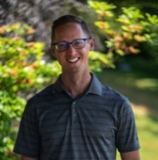
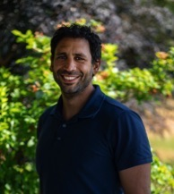

Therapists
Kendra Mulligan BScPT, CGIMS, FCAMPT

Kendra, a University of Alberta graduate, has over 18 years of
experience in physical therapy, including owning a practice in
Northern Alberta. She grew up on a cattle farm in Northern BC and is
active in mountain biking. Kendra holds an FCAMPT certification,
completed the University of Toronto's Evidence-Based Practice
program, and is certified in GunnIMS and Anatomical Acupuncture.
Since 2010, she has co-owned Ascent Physiotherapy in Comox, BC,
focusing on evidence-based manual therapy and community involvement.
Trish Leslie BScPT

Trish, a 2011 honours graduate in Physical Therapy from Queen
Margaret University, has worked in orthopaedics, women's health,
geriatrics, neurology, and sports physiotherapy. She’s also worked
with rugby teams in Edinburgh and Victoria. Since 2012, she has
focused on manual therapy, modalities, and exercise prescription.
Trish is certified in acupuncture and has completed additional
courses in orthopaedics and women's health. Originally from
Ucluelet, she now lives in the Comox Valley.
Jared Hromika MPT, FDN/IMS

Jared, a 2014 graduate of the University of British Columbia with a
Masters of Physical Therapy, moved to the Comox Valley in 2015. He
gained experience in private practice orthopaedics in Vancouver
before developing a treatment approach focused on movement
assessment, manual therapy, and exercise prescription. Jared also
has training in Neurokinetic Therapy to address compensation
patterns. Additionally, he offers bike fitting services at Ascent
Physiotherapy and has a background in triathlon and bike mechanics.
Outside of work, Jared enjoys swimming, trail running, softball, and
hockey.
Shadi Fleifel MPT, FDN/IMS

Shadi has been with Ascent Physiotherapy since 2018. He holds a
Bachelor's in Kinesiology from Western University and a Master's in
Physiotherapy from Perth, Australia. With over 10 years of
experience, Shadi has worked with high-level sports teams, including
the Canada Rugby 7's and James Bay Rugby Club. He specializes in
sports and musculoskeletal injury rehabilitation. Shadi is committed
to ongoing education, having completed courses in mobilization,
fascial taping, shoulder rehabilitation, and IMS. Outside of work,
he enjoys spending time with his kids and participating in
activities like CrossFit, swimming, biking, and rugby.
Chelsey de la Rey MPT

Chelsey completed her Bachelor of Human Kinetics at Trinity Western
University and her Master of Physical Therapy at the University of
British Columbia in 2019. A Comox Valley native, she provides
individualized care through comprehensive assessments, manual
therapy, exercise prescription, and education. Chelsey has completed
Orthopedic Division Level 1 and an introduction to the Bobath
concept, with plans to continue her education in manual therapy and
pain science. She has a strong sports background, having competed as
a varsity athlete and coached youth teams. Outside the clinic,
Chelsey enjoys golf, fishing, and various sports.
Dylan Rybski MPT, IMS

Dylan completed his Master's of Physical Therapy at the University
of British Columbia after earning a Kinesiology degree from the
University of Victoria. He has advanced training in concussion
management, orthopaedic manual therapy, and is certified in IMS dry
needling. Originally from Vancouver Island, Dylan's passion for
rehabilitation grew from his own athletic injuries. After practicing
in Vancouver, he is excited to return to the Comox Valley. Dylan
combines active exercise rehab and practical skills in his treatment
approach, working with diverse clients, including athletes and those
recovering from surgery or injuries. Outside the clinic, he enjoys
the outdoors, gym, beach, ice activities, and golf.